Materials
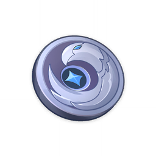Silver Raven Insignia
Silver Raven Insignia
Trophies
2★
Character and Weapon Enhancement Material
A raven insignia used by members of the Treasure Hoarders to identify each other. The Treasure Hoarders ask for no resume. Anyone who has an insatiable desire for treasure and is backed up by an equal amount of courage can become a worthy member.
Sources:
Crafted
Used by character ascensions and talents:


Used by weapon ascensions:
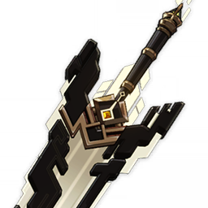
The Unforged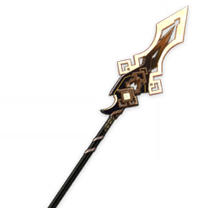
Vortex Vanquisher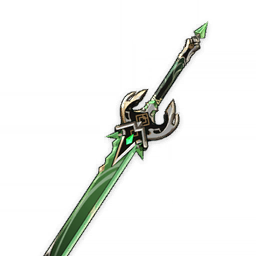
Primordial Jade Cutter

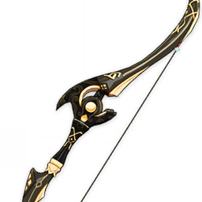
Prototype Crescent


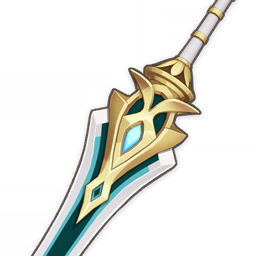
Makhaira Aquamarine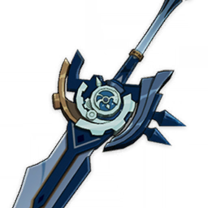
Whiteblind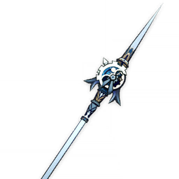
Crescent Pike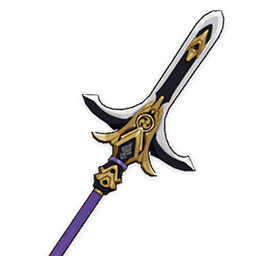
Kitain Cross Spear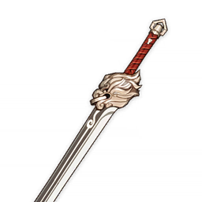
Lion's Roar
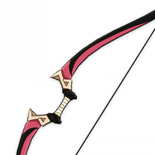
Messenger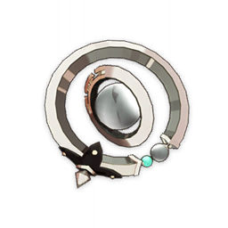
Emerald Orb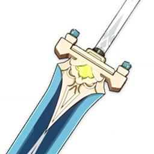
Skyrider Greatsword